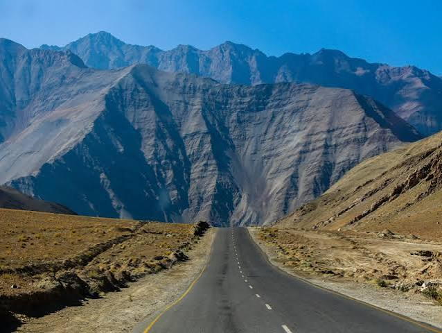
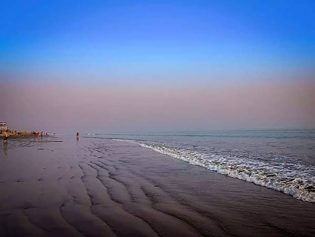

NCERT POORVI · SPECTACULAR WONDERS
India is more
India is more
extraordinary than you think.
From forests that glow to bridges that grow, discover places where nature seems to have ignored the ordinary rulebook.
SEVEN WONDERS. SEVEN DIFFERENT WORLDS.
01 / 07
A DIFFERENT KIND OF FIELD TRIP
Not just places on a map. Natural phenomena, living ecosystems, geological mysteries, and landscapes worth understanding.
THE COLLECTION
Seven wonders.
Seven wonders.
Seven reasons to look closer.
Choose a destination to explore its story, science, and defining features.
 01 / FLOWERS
01 / FLOWERS
Valley of Flowers
A Himalayan landscape painted by wildflowers.
↗ 02 / LIVING ARCHITECTURE
02 / LIVING ARCHITECTURE
Living Root Bridges
Bridges patiently shaped from living roots.
↗ 03 / BIOLUMINESCENCE
03 / BIOLUMINESCENCE
Glowing Waters
When tiny organisms turn darkness electric blue.
↗
04 / OPTICAL ILLUSIONMagnetic Hills
A road that appears to defy gravity.
↗ 05 / GEOLOGY
05 / GEOLOGY
Lonar Crater Lake
A rare crater formed by a cosmic impact.
↗ 06 / ECOSYSTEM
06 / ECOSYSTEM
The Sundarbans
A vast mangrove world shaped by tides.
↗
07 / TIDESChandipur Beach
A shoreline where the sea seems to disappear.
↗